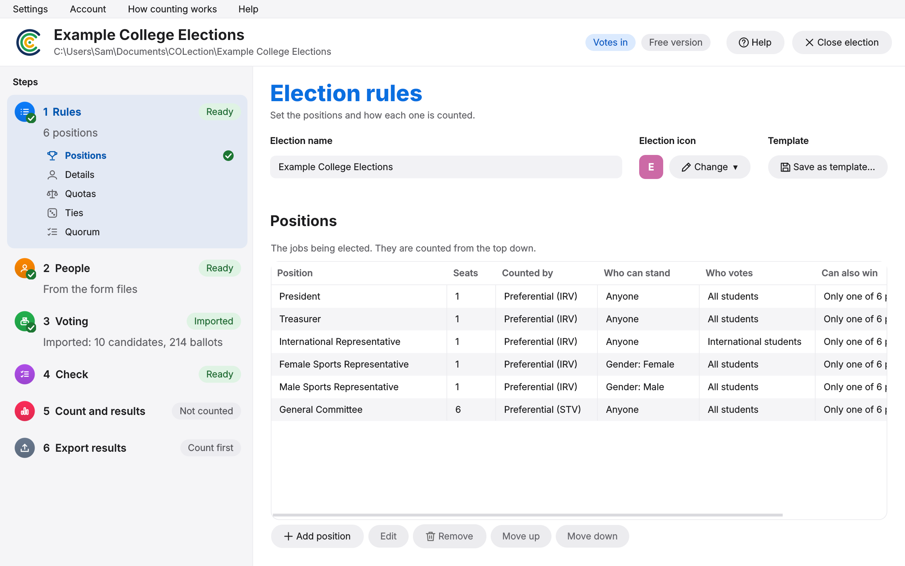
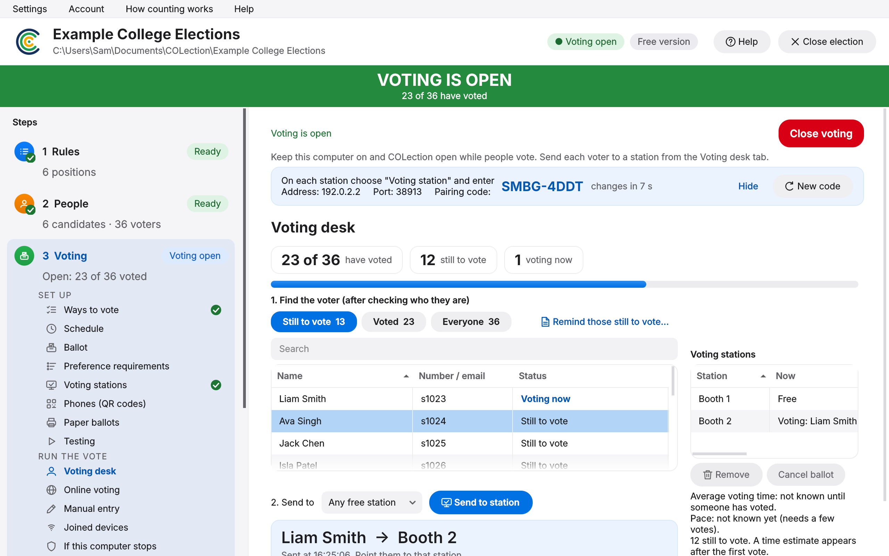
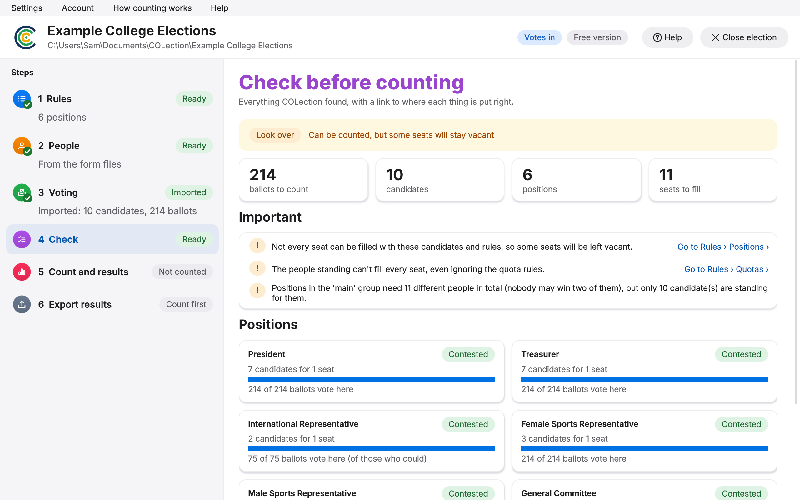
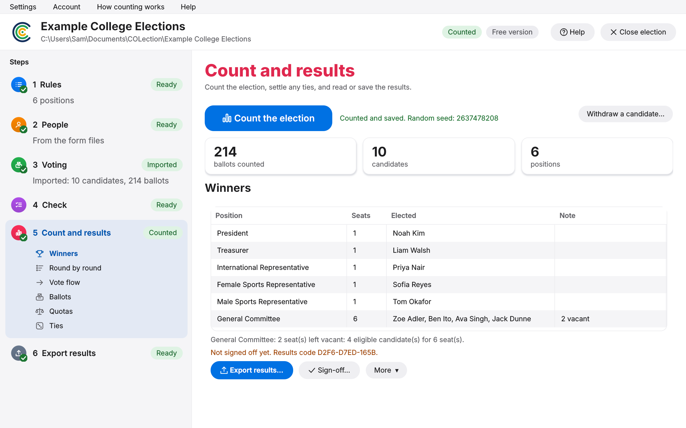
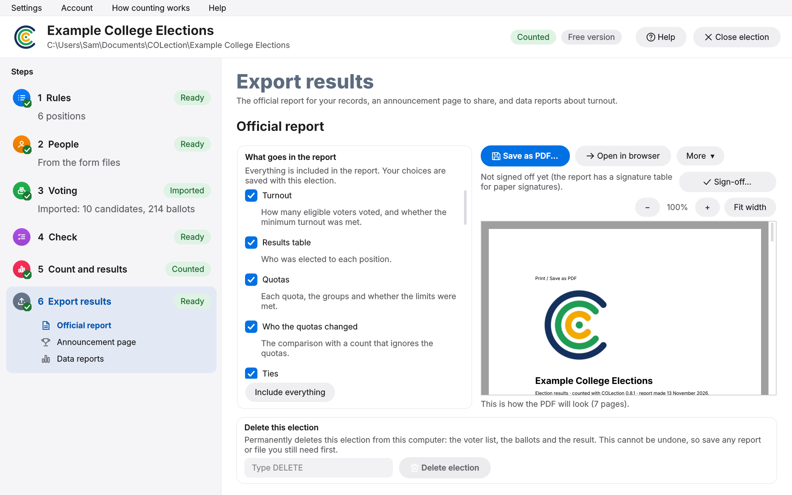
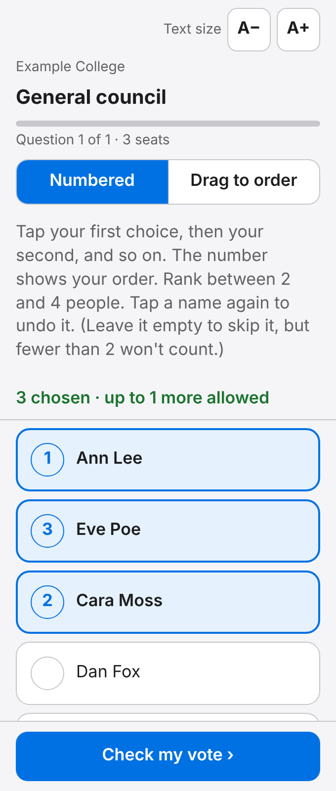
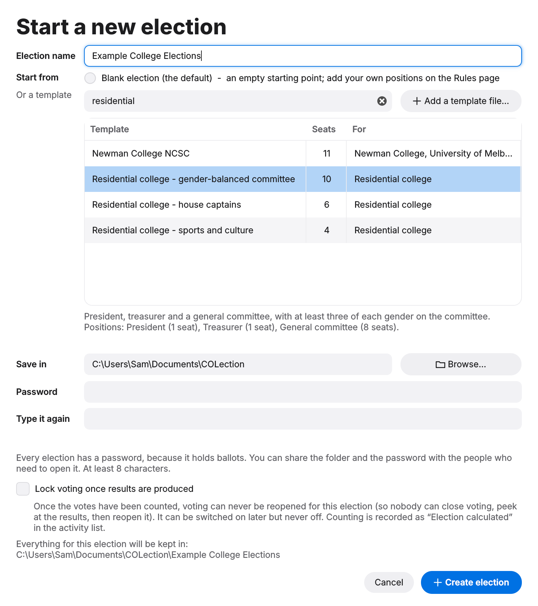

1
Set the rules
Say what's being elected — a president, a committee, both. Start from a ready-made template and change what you like.

The program walks you through the election in order, and each step tells you when it's ready. Here's the whole thing.
1
Say what's being elected — a president, a committee, both. Start from a ready-made template and change what you like.

2
Take nominations through a form, or type the candidates in. Add your voter list, then run the vote: in the room on phones, from home with personal links, or both at once.

3
Before anything is counted, the program looks over the whole setup and tells you plainly if something doesn't add up.

4
One click. The winners come up, with every round of counting there to look at if you want it.

5
Tick what goes in the report, watch the PDF build itself, then print it or sign it off. Next year's committee will thank you.

One laptop runs the room. Everything else is a phone or a borrowed computer.
Whoever's on the desk ticks each voter off and sends them a ballot. Voters scan a code with their phone — nothing to install — or sit at a laptop set up as a voting booth.

Ready-made setups for student unions, colleges, schools, clubs, awards nights and yes-or-no motions. Save your own rules for next year — worth checking against your constitution, but you only have to do it once.
